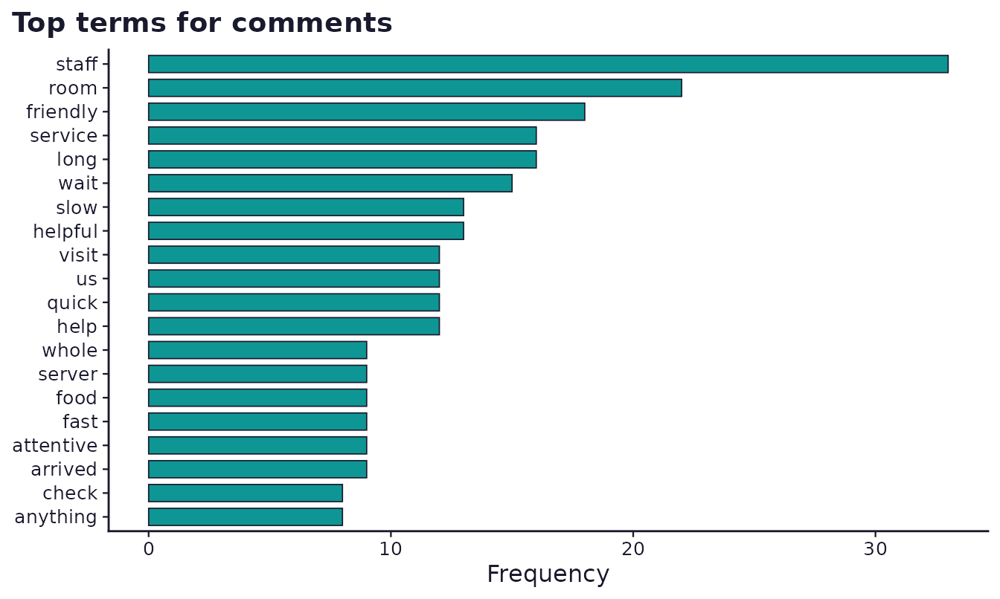
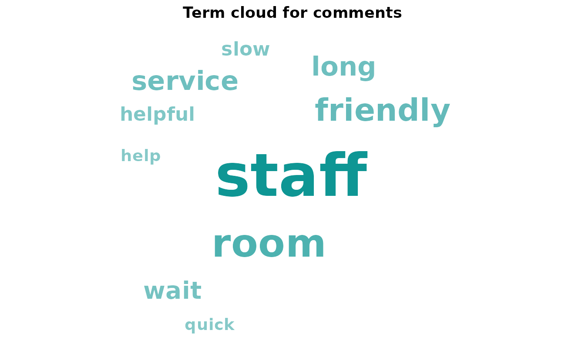
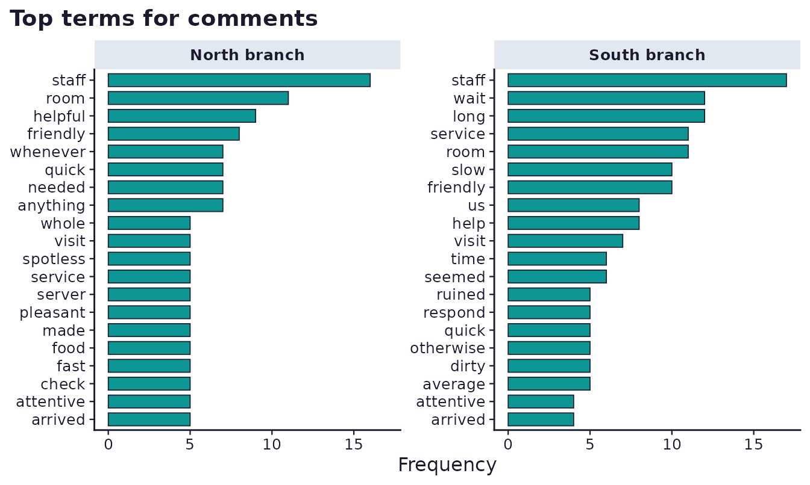
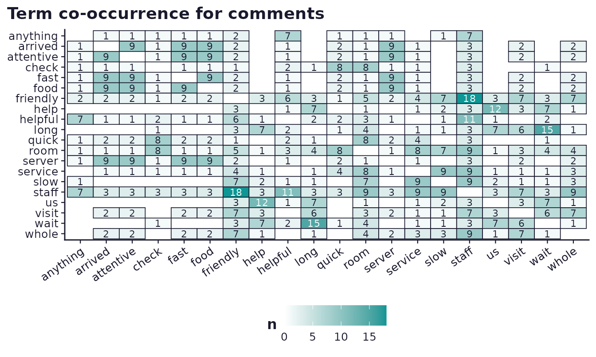
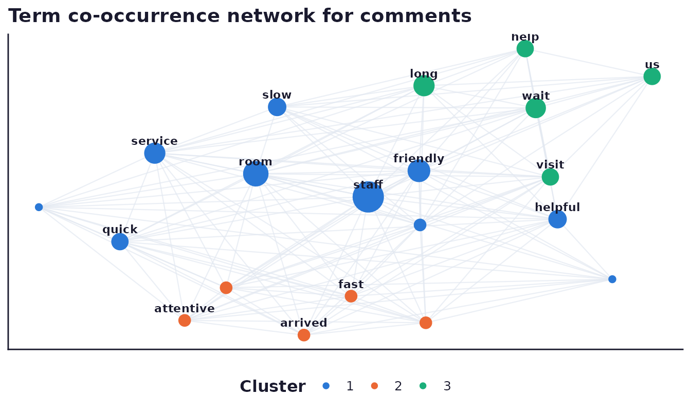
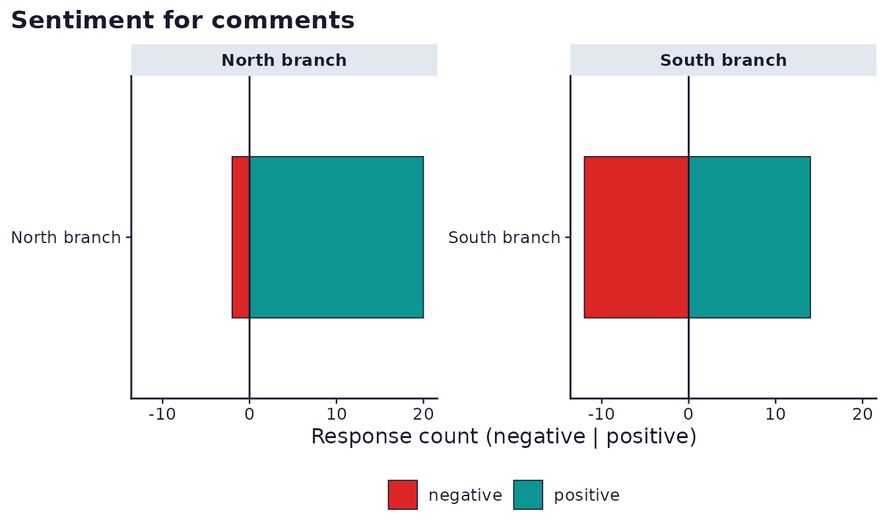
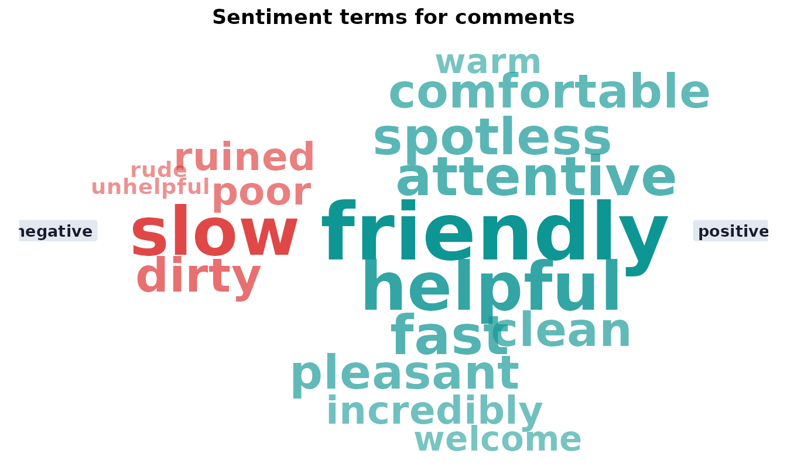
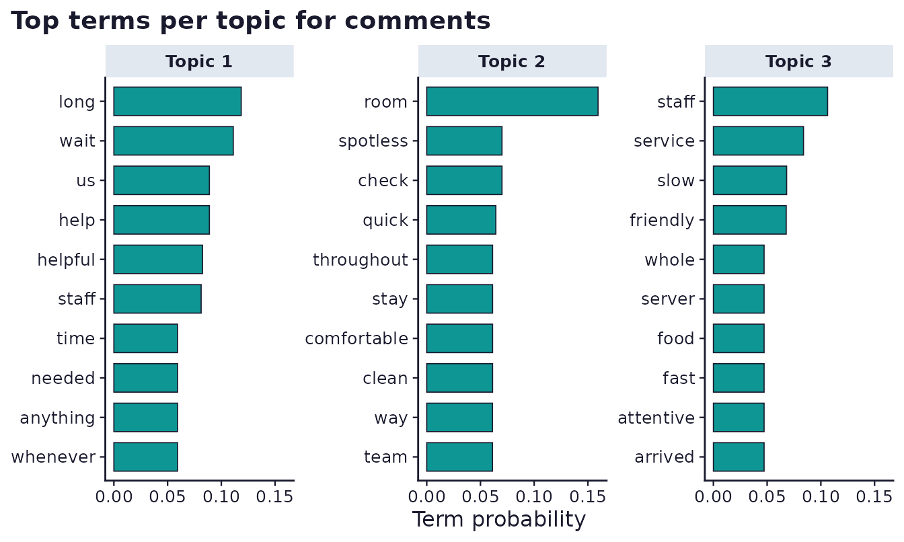

What this vignette covers
Text and textarea items collect open-ended responses that a Likert scale cannot: the reason behind a rating, a complaint a closed question never anticipated, a suggestion nobody thought to ask for directly. surveyframe treats analysing that text the same way it treats every other analysis: a research question, a technique, and the roles that fill it, declared in the instrument’s analysis plan before the numbers exist.
Nine methods are available, from plain term counting through to topic
modelling. The base path (term_freq,
ngram_freq, term_context,
co_occurrence) needs no optional packages. Five more
(co_occurrence_network, tidy_sentiment,
quanteda_dfm, topic_model_lda,
stm_topics) each need one Suggests-only package, guarded
with rlang::check_installed(), and every guarded section
below knits cleanly whether or not that package is installed.
A survey with an open-ended item beside a Likert scale
The worked example is a small hospitality feedback survey: a satisfaction scale, a branch (region) respondents visited, and one open-ended comments item asking what stood out about their visit.
satisfaction_cs <- sf_choices(
"agree5", values = 1:5,
labels = c("Strongly disagree", "Disagree", "Neutral",
"Agree", "Strongly agree")
)
branch_cs <- sf_choices(
"branch", values = c("north", "south"),
labels = c("North branch", "South branch")
)
instr <- sf_instrument(
title = "Hospitality feedback",
version = "1.0.0",
components = list(
satisfaction_cs, branch_cs,
sf_item("satisfaction", "Overall, I was satisfied with my visit.",
type = "likert", choice_set = "agree5"),
sf_item("branch", "Which branch did you visit?",
type = "single_choice", choice_set = "branch_cs"),
sf_item("comments", "What stood out about your visit, good or bad?",
type = "textarea")
)
)Simulated responses
The comments are built from a small phrase bank, seeded so the example is reproducible. The north branch’s simulated visits lean positive, the south branch’s lean mixed, which gives the group-role examples below something real to show rather than a coincidence.
positive_pool <- c(
"The staff were incredibly friendly and helpful.",
"Check-in was quick and the room was spotless.",
"Our server was attentive and the food arrived fast.",
"The team went out of their way to help us.",
"Friendly staff made the whole visit pleasant.",
"The room was clean and comfortable throughout our stay.",
"Quick service and a warm welcome from everyone.",
"The staff were helpful whenever we needed anything."
)
negative_pool <- c(
"We had to wait a long time for someone to help us.",
"The staff seemed rude and unhelpful the whole time.",
"The wait for a table was far too long.",
"Our room was dirty and the service was slow.",
"Staff were slow to respond and not very friendly.",
"The long wait ruined an otherwise average visit.",
"Service was poor and the staff seemed uninterested.",
"We waited a long time and nobody apologised."
)
sample_comment <- function(p_positive) {
n_sentences <- sample(1:2, 1)
pools <- sample(c("pos", "neg"), n_sentences, replace = TRUE,
prob = c(p_positive, 1 - p_positive))
sentences <- vapply(pools, function(p) {
if (p == "pos") sample(positive_pool, 1) else sample(negative_pool, 1)
}, character(1))
paste(sentences, collapse = " ")
}
n <- 60
branch <- sample(c("north", "south"), n, replace = TRUE)
comments <- vapply(branch, function(b) {
sample_comment(if (b == "north") 0.8 else 0.35)
}, character(1))
responses <- data.frame(
satisfaction = sample(3:5, n, replace = TRUE, prob = c(0.2, 0.35, 0.45)),
branch = branch,
comments = comments,
stringsAsFactors = FALSE
)
kable(head(responses, 4), row.names = FALSE,
caption = "The first 4 simulated responses.")| satisfaction | branch | comments |
|---|---|---|
| 4 | north | The wait for a table was far too long. |
| 5 | north | The staff were helpful whenever we needed anything. |
| 3 | north | The staff were helpful whenever we needed anything. |
| 5 | south | Our server was attentive and the food arrived fast. |
Cleaning a text item
clean_text_responses() pulls one item’s responses out of
the data, drops blank and missing entries, and applies light,
configurable cleaning. It keeps a respondent attribute
mapping each cleaned entry back to its original row, so anything built
on top (a concordance, a representative quote) can still cite where a
response came from.
cleaned <- clean_text_responses(responses, "comments", instrument = instr)
length(cleaned)
#> [1] 60
head(attr(cleaned, "respondent"))
#> [1] 1 2 3 4 5 6Term and n-gram frequency
term_frequency() tokenises, lower-cases, strips
punctuation, removes stop words (a built-in English list ships with the
package, so this needs no optional dependency), and counts.
ngram_frequency() does the same for 2-word and 3-word
phrases, which surface a complaint like “long wait” that single-word
counts would split apart.
terms <- term_frequency(cleaned, top_n = 10)
kable(terms, row.names = FALSE, caption = "The 10 most frequent terms.")| term | n | pct |
|---|---|---|
| staff | 33 | 7.4 |
| room | 22 | 5.0 |
| friendly | 18 | 4.1 |
| long | 16 | 3.6 |
| service | 16 | 3.6 |
| wait | 15 | 3.4 |
| helpful | 13 | 2.9 |
| slow | 13 | 2.9 |
| help | 12 | 2.7 |
| quick | 12 | 2.7 |
bigrams <- ngram_frequency(cleaned, n = 2, top_n = 8)
kable(bigrams, row.names = FALSE, caption = "The 8 most frequent bigrams.")| term | n | pct |
|---|---|---|
| help us | 12 | 3.1 |
| arrived fast | 9 | 2.3 |
| attentive food | 9 | 2.3 |
| food arrived | 9 | 2.3 |
| server attentive | 9 | 2.3 |
| check quick | 8 | 2.1 |
| helpful whenever | 8 | 2.1 |
| needed anything | 8 | 2.1 |
Both run through the analysis plan the same way any other method
does. Here, term_freq also takes an optional
group role (covered below), which splits the table and
facets the chart by a nominal or ordinal covariate.
sf_plan(instr) <- list(
list(id = "RQ1",
research_question = "What themes recur in the open-ended comments?",
family = "text", method = "term_freq",
roles = list(item = "comments"),
options = list()),
list(id = "RQ2",
research_question = "Do the leading themes differ by branch?",
family = "text", method = "term_freq",
roles = list(item = "comments", group = "branch"),
options = list())
)
results <- run_analysis_plan(responses, instr, plots = has_ggplot)
kable(results[["RQ1"]]$table, row.names = FALSE,
caption = "Term frequency across all branches.")| term | n | pct |
|---|---|---|
| staff | 33 | 7.4 |
| room | 22 | 5.0 |
| friendly | 18 | 4.1 |
| long | 16 | 3.6 |
| service | 16 | 3.6 |
| wait | 15 | 3.4 |
| helpful | 13 | 2.9 |
| slow | 13 | 2.9 |
| help | 12 | 2.7 |
| quick | 12 | 2.7 |
| us | 12 | 2.7 |
| visit | 12 | 2.7 |
| arrived | 9 | 2.0 |
| attentive | 9 | 2.0 |
| fast | 9 | 2.0 |
| food | 9 | 2.0 |
| server | 9 | 2.0 |
| whole | 9 | 2.0 |
| anything | 8 | 1.8 |
| check | 8 | 1.8 |
| needed | 8 | 1.8 |
| spotless | 8 | 1.8 |
| time | 8 | 1.8 |
| whenever | 8 | 1.8 |
| clean | 7 | 1.6 |
| comfortable | 7 | 1.6 |
| dirty | 7 | 1.6 |
| made | 7 | 1.6 |
| pleasant | 7 | 1.6 |
| seemed | 7 | 1.6 |
results[["RQ1"]]$plot
A word cloud is available as an opt-in alternative to the bar chart
(options$wordcloud = TRUE), useful in a slide deck where a
bar chart’s axis would be redundant.
sframe_plot_term_frequency(
list(test = "term_freq", variable = "comments", table = terms,
options = list(wordcloud = TRUE))
)
The group role: comparing branches
RQ2 above declared the same method with a
group role added. The table gains a group
column, one block of rows per branch, and the plot facets instead of
drawing a single panel.
kable(results[["RQ2"]]$table, row.names = FALSE,
caption = "Term frequency split by branch.")| group | term | n | pct | note |
|---|---|---|---|---|
| North branch | staff | 16 | 8.0 | NA |
| North branch | room | 11 | 5.5 | NA |
| North branch | helpful | 9 | 4.5 | NA |
| North branch | friendly | 8 | 4.0 | NA |
| North branch | anything | 7 | 3.5 | NA |
| North branch | needed | 7 | 3.5 | NA |
| North branch | quick | 7 | 3.5 | NA |
| North branch | whenever | 7 | 3.5 | NA |
| North branch | arrived | 5 | 2.5 | NA |
| North branch | attentive | 5 | 2.5 | NA |
| North branch | check | 5 | 2.5 | NA |
| North branch | fast | 5 | 2.5 | NA |
| North branch | food | 5 | 2.5 | NA |
| North branch | made | 5 | 2.5 | NA |
| North branch | pleasant | 5 | 2.5 | NA |
| North branch | server | 5 | 2.5 | NA |
| North branch | service | 5 | 2.5 | NA |
| North branch | spotless | 5 | 2.5 | NA |
| North branch | visit | 5 | 2.5 | NA |
| North branch | whole | 5 | 2.5 | NA |
| North branch | clean | 4 | 2.0 | NA |
| North branch | comfortable | 4 | 2.0 | NA |
| North branch | help | 4 | 2.0 | NA |
| North branch | long | 4 | 2.0 | NA |
| North branch | stay | 4 | 2.0 | NA |
| North branch | throughout | 4 | 2.0 | NA |
| North branch | us | 4 | 2.0 | NA |
| North branch | slow | 3 | 1.5 | NA |
| North branch | team | 3 | 1.5 | NA |
| North branch | wait | 3 | 1.5 | NA |
| South branch | staff | 17 | 7.0 | NA |
| South branch | long | 12 | 4.9 | NA |
| South branch | wait | 12 | 4.9 | NA |
| South branch | room | 11 | 4.5 | NA |
| South branch | service | 11 | 4.5 | NA |
| South branch | friendly | 10 | 4.1 | NA |
| South branch | slow | 10 | 4.1 | NA |
| South branch | help | 8 | 3.3 | NA |
| South branch | us | 8 | 3.3 | NA |
| South branch | visit | 7 | 2.9 | NA |
| South branch | seemed | 6 | 2.5 | NA |
| South branch | time | 6 | 2.5 | NA |
| South branch | average | 5 | 2.0 | NA |
| South branch | dirty | 5 | 2.0 | NA |
| South branch | otherwise | 5 | 2.0 | NA |
| South branch | quick | 5 | 2.0 | NA |
| South branch | respond | 5 | 2.0 | NA |
| South branch | ruined | 5 | 2.0 | NA |
| South branch | arrived | 4 | 1.6 | NA |
| South branch | attentive | 4 | 1.6 | NA |
| South branch | fast | 4 | 1.6 | NA |
| South branch | food | 4 | 1.6 | NA |
| South branch | helpful | 4 | 1.6 | NA |
| South branch | poor | 4 | 1.6 | NA |
| South branch | server | 4 | 1.6 | NA |
| South branch | someone | 4 | 1.6 | NA |
| South branch | team | 4 | 1.6 | NA |
| South branch | uninterested | 4 | 1.6 | NA |
| South branch | way | 4 | 1.6 | NA |
| South branch | went | 4 | 1.6 | NA |
results[["RQ2"]]$plot
North’s simulated comments lean toward “friendly”, “helpful”, and “clean”. South’s lean toward “wait”, “slow”, and “staff” in a different sense, the complaint rather than the compliment. A group split like this is what turns “the comments mention staff a lot” into a specific, actionable finding.
The group role applies the same minimum-response guard
per group as it does overall: a branch with too few usable responses is
flagged in the table’s note column rather than silently
producing a trend from a handful of comments.
Keyword in context
term_context() builds a concordance for one keyword:
every place it appears, with a window of surrounding words on each side.
It is the fastest way to read what a keyword actually means in context,
rather than trusting that a frequent term always means the same
thing.
kwic <- term_context(cleaned, term = "wait", window = 5)
kable(kwic, row.names = FALSE, caption = 'Every occurrence of "wait" in context.')| respondent | before | match | after |
|---|---|---|---|
| 1 | the | wait | for a table was far |
| 9 | to help us the long | wait | ruined an otherwise average visit |
| 13 | and helpful we had to | wait | a long time for someone |
| 14 | incredibly friendly and helpful the | wait | for a table was far |
| 23 | we had to | wait | a long time for someone |
| 24 | we had to | wait | a long time for someone |
| 25 | the service was slow the | wait | for a table was far |
| 28 | the | wait | for a table was far |
| 31 | comfortable throughout our stay the | wait | for a table was far |
| 38 | we had to | wait | a long time for someone |
| 40 | the long | wait | ruined an otherwise average visit |
| 42 | the long | wait | ruined an otherwise average visit |
| 45 | the long | wait | ruined an otherwise average visit |
| 49 | the long | wait | ruined an otherwise average visit |
| 52 | we had to | wait | a long time for someone |
Co-occurrence
.sframe_cooccurrence()’s public entry point, the
co_occurrence method, counts how often pairs of frequent
terms appear together within the same response, and renders as a
heatmap.
sf_plan(instr) <- c(sf_plan(instr), list(list(
id = "RQ3",
research_question = "Which terms tend to appear together in the same comment?",
family = "text", method = "co_occurrence",
roles = list(item = "comments"),
options = list()
)))
results <- run_analysis_plan(responses, instr, plots = has_ggplot)
kable(head(results[["RQ3"]]$table, 8), row.names = FALSE,
caption = "The strongest co-occurring term pairs.")| term_a | term_b | n |
|---|---|---|
| friendly | staff | 18 |
| long | wait | 15 |
| help | us | 12 |
| helpful | staff | 11 |
| arrived | attentive | 9 |
| arrived | fast | 9 |
| arrived | food | 9 |
| arrived | server | 9 |
results[["RQ3"]]$plot
Co-occurrence network
The same co-occurrence structure, clustered and laid out as a
network, needs the optional igraph package.
igraph::cluster_louvain() groups terms into thematic
clusters and igraph::layout_with_fr() positions them with a
force-directed layout. Both are seeded, so the same
options$seed always produces the same clusters and the same
layout.
sf_plan(instr) <- c(sf_plan(instr), list(list(
id = "RQ4",
research_question = "Do the frequent terms form distinct thematic clusters?",
family = "text", method = "co_occurrence_network",
roles = list(item = "comments"),
options = list(seed = 42)
)))
results <- run_analysis_plan(responses, instr, plots = has_ggplot)
kable(results[["RQ4"]]$table, row.names = FALSE,
caption = "Term co-occurrence network: one row per node.")| term | frequency | cluster | x | y |
|---|---|---|---|---|
| anything | 8 | 1 | 2.1917953 | -2.0822495 |
| arrived | 9 | 2 | 1.4615771 | -2.4772383 |
| attentive | 9 | 2 | 1.1790744 | -2.3735285 |
| check | 8 | 1 | 0.8338025 | -1.5728367 |
| fast | 9 | 2 | 1.5732010 | -2.2020125 |
| food | 9 | 2 | 1.2773098 | -2.1426404 |
| friendly | 18 | 1 | 1.7338476 | -1.3154823 |
| help | 12 | 3 | 1.9855295 | -0.4521643 |
| helpful | 13 | 1 | 2.0621875 | -1.6578872 |
| long | 16 | 3 | 1.7459138 | -0.7139174 |
| quick | 12 | 1 | 1.0257875 | -1.8167177 |
| room | 22 | 1 | 1.3475179 | -1.3365107 |
| server | 9 | 2 | 1.7501704 | -2.3902528 |
| service | 16 | 1 | 1.1083102 | -1.1910460 |
| slow | 13 | 1 | 1.3980863 | -0.8642853 |
| staff | 33 | 1 | 1.6138444 | -1.5004346 |
| us | 12 | 3 | 2.2861250 | -0.6484429 |
| visit | 12 | 3 | 2.0451459 | -1.3590922 |
| wait | 15 | 3 | 2.0105057 | -0.8718816 |
| whole | 9 | 1 | 1.7365352 | -1.6985350 |
results[["RQ4"]]$apa
#> [1] "Term co-occurrence network for comments (N = 60 responses, 20 terms, 145 edges, 3 clusters, modularity = 0.30)."
results[["RQ4"]]$plot
Sentiment
tidy_sentiment needs the optional tidytext
package. It uses the bundled "bing" positive/negative
lexicon, so no download is needed once tidytext is installed. Like
term_freq, it accepts an optional group
role.
sf_plan(instr) <- c(sf_plan(instr), list(list(
id = "RQ5",
research_question = "Is sentiment in the comments more positive or negative, and does it differ by branch?",
family = "text", method = "tidy_sentiment",
roles = list(item = "comments", group = "branch"),
options = list()
)))
results <- run_analysis_plan(responses, instr, plots = has_ggplot)
kable(results[["RQ5"]]$table, row.names = FALSE,
caption = "Sentiment counts, split by branch.")| group | sentiment | n | prop | note |
|---|---|---|---|---|
| North branch | positive | 20 | 0.690 | NA |
| North branch | negative | 2 | 0.069 | NA |
| North branch | neutral | 7 | 0.241 | NA |
| South branch | positive | 14 | 0.452 | NA |
| South branch | negative | 12 | 0.387 | NA |
| South branch | neutral | 5 | 0.161 | NA |
results[["RQ5"]]$apa
#> [1] "Sentiment for comments by branch (N = 60 responses, 2 groups)."
results[["RQ5"]]$plot
The diverging bar answers “how many responses leaned positive.” A
different question, “which words drove that,” has its own
opt-in view: a comparison cloud (options$wordcloud = TRUE,
the same toggle term_freq’s word cloud uses),
negative-sentiment words to the left of centre and positive-sentiment
words to the right, matching the diverging bar’s own
left-negative/right-positive convention, each sized and shaded (dark for
frequent, light for rare) by how often it occurred.
instr_cloud <- instr
plan <- sf_plan(instr_cloud)
plan[[which(vapply(plan, `[[`, "", "id") == "RQ5")]]$options <- list(wordcloud = TRUE)
sf_plan(instr_cloud) <- plan
result_cloud <- run_analysis_plan(responses, instr_cloud, plots = TRUE)
result_cloud[["RQ5"]]$plot
Document-feature matrix
quanteda_dfm needs the optional quanteda
package. It is a descriptive summary rather than an analysis in its own
right: feature count, sparsity, and the leading features, useful as a
sanity check before a heavier method.
sf_plan(instr) <- c(sf_plan(instr), list(list(
id = "RQ6",
research_question = "What does the document-feature matrix of the comments look like?",
family = "text", method = "quanteda_dfm",
roles = list(item = "comments"),
options = list()
)))
results <- run_analysis_plan(responses, instr)
kable(results[["RQ6"]]$table, row.names = FALSE,
caption = "Document-feature matrix summary.")| n_responses | n_features | sparsity |
|---|---|---|
| 60 | 72 | 0.8354 |
kable(head(results[["RQ6"]]$top_features, 8), row.names = FALSE,
caption = "The leading features.")| term | n |
|---|---|
| the | 77 |
| was | 56 |
| and | 54 |
| staff | 33 |
| our | 23 |
| to | 23 |
| room | 22 |
| were | 19 |
Topic modelling and representative quotes
stm_topics fits a structural topic model via the
optional stm package (tokenising uses
tidytext, so both are needed). A small k keeps
this example fast; a real study would try several values of
k and compare fit – k = 3 (or
topic_model_lda’s default k = 4) is a
demonstration value, not a recommendation, and neither default was
chosen from any fit criterion. The accepted way to choose k
is to fit a range of candidate values and compare them on held-out
likelihood or a coherence metric: stm::searchK() does this
directly for stm_topics’s underlying model (pass it the
same documents/vocab
stm::prepDocuments() would produce), and
topicmodels::perplexity() on a held-out split serves the
same purpose for topic_model_lda. Neither is wrapped by
surveyframe – k selection is a modelling decision for the
researcher to make and report, not a default to trust unexamined.
sf_plan(instr) <- c(sf_plan(instr), list(list(
id = "RQ7",
research_question = "What topics organise the open-ended comments?",
family = "text", method = "stm_topics",
roles = list(item = "comments"),
options = list(k = 3, seed = 42)
)))
results <- run_analysis_plan(responses, instr, plots = has_ggplot)
kable(results[["RQ7"]]$table, row.names = FALSE,
caption = "Top terms per topic.")| topic | proportion | term | beta | rank |
|---|---|---|---|---|
| 1 | 0.3056 | long | 0.1185254 | 1 |
| 1 | 0.3056 | wait | 0.1111175 | 2 |
| 1 | 0.3056 | help | 0.0888936 | 3 |
| 1 | 0.3056 | us | 0.0888936 | 4 |
| 1 | 0.3056 | helpful | 0.0825053 | 5 |
| 1 | 0.3056 | staff | 0.0812188 | 6 |
| 1 | 0.3056 | time | 0.0592627 | 7 |
| 1 | 0.3056 | anything | 0.0592627 | 8 |
| 1 | 0.3056 | needed | 0.0592627 | 9 |
| 1 | 0.3056 | whenever | 0.0592627 | 10 |
| 2 | 0.2766 | room | 0.1594378 | 1 |
| 2 | 0.2766 | check | 0.0700360 | 2 |
| 2 | 0.2766 | spotless | 0.0700360 | 3 |
| 2 | 0.2766 | quick | 0.0643212 | 4 |
| 2 | 0.2766 | clean | 0.0612815 | 5 |
| 2 | 0.2766 | comfortable | 0.0612815 | 6 |
| 2 | 0.2766 | stay | 0.0612815 | 7 |
| 2 | 0.2766 | throughout | 0.0612815 | 8 |
| 2 | 0.2766 | team | 0.0611922 | 9 |
| 2 | 0.2766 | way | 0.0611922 | 10 |
| 3 | 0.4178 | staff | 0.1062715 | 1 |
| 3 | 0.4178 | service | 0.0838659 | 2 |
| 3 | 0.4178 | slow | 0.0681410 | 3 |
| 3 | 0.4178 | friendly | 0.0677522 | 4 |
| 3 | 0.4178 | arrived | 0.0471746 | 5 |
| 3 | 0.4178 | attentive | 0.0471746 | 6 |
| 3 | 0.4178 | fast | 0.0471746 | 7 |
| 3 | 0.4178 | food | 0.0471746 | 8 |
| 3 | 0.4178 | server | 0.0471746 | 9 |
| 3 | 0.4178 | whole | 0.0471746 | 10 |
results[["RQ7"]]$apa
#> [1] "STM topic model (k = 3, N = 60 documents)."
results[["RQ7"]]$plot
extract_quotes() reads the fitted model back off the
result and returns the most representative response for each topic, with
the original respondent index (not a document or matrix
row number), so a quote can be traced back to the response that produced
it.
quotes <- extract_quotes(results[["RQ7"]], text = cleaned, n_quotes = 2)
kable(quotes, row.names = FALSE,
caption = "The 2 most representative comments per topic.")| topic | rank | respondent | quote |
|---|---|---|---|
| 1 | 1 | 56 | the staff were helpful whenever we needed anything the staff were helpful whenever we needed anything |
| 1 | 2 | 23 | we had to wait a long time for someone to help us |
| 2 | 1 | 30 | the room was clean and comfortable throughout our stay |
| 2 | 2 | 46 | the room was clean and comfortable throughout our stay |
| 3 | 1 | 18 | friendly staff made the whole visit pleasant our server was attentive and the food arrived fast |
| 3 | 2 | 39 | friendly staff made the whole visit pleasant our server was attentive and the food arrived fast |
The rendered report
Because every block above is declared in the instrument’s analysis
plan, the whole thing renders as one report in the order it was
declared, exactly like any other family of methods. A topic model’s
representative quotes attach to its result as $quotes and
render as their own table beneath the topic terms, using the same
generic table renderer every other result’s $table
uses.
render_report(instr, responses, output_file = "hospitality-feedback.html")What surveyframe does not do here
This is algorithmic counting and clustering, not interpretation. Term frequency, co-occurrence, and topic modelling surface candidate themes; a human reader still decides what they mean and whether they answer the research question.
surveyframe also does not build a qualitative coding interface.
Manual, inductive coding (code-and-retrieve, memos, a hierarchical code
scheme, the qcoder or RQDA style of analysis) is a different paradigm
from the algorithmic methods here, human interpretation rather than
counting or clustering, and is out of scope by design.
extract_quotes()’s output is deliberately a plain data
frame, clean enough to export and take into a dedicated qualitative
coding tool for that next step, rather than surveyframe trying to be
that tool itself.